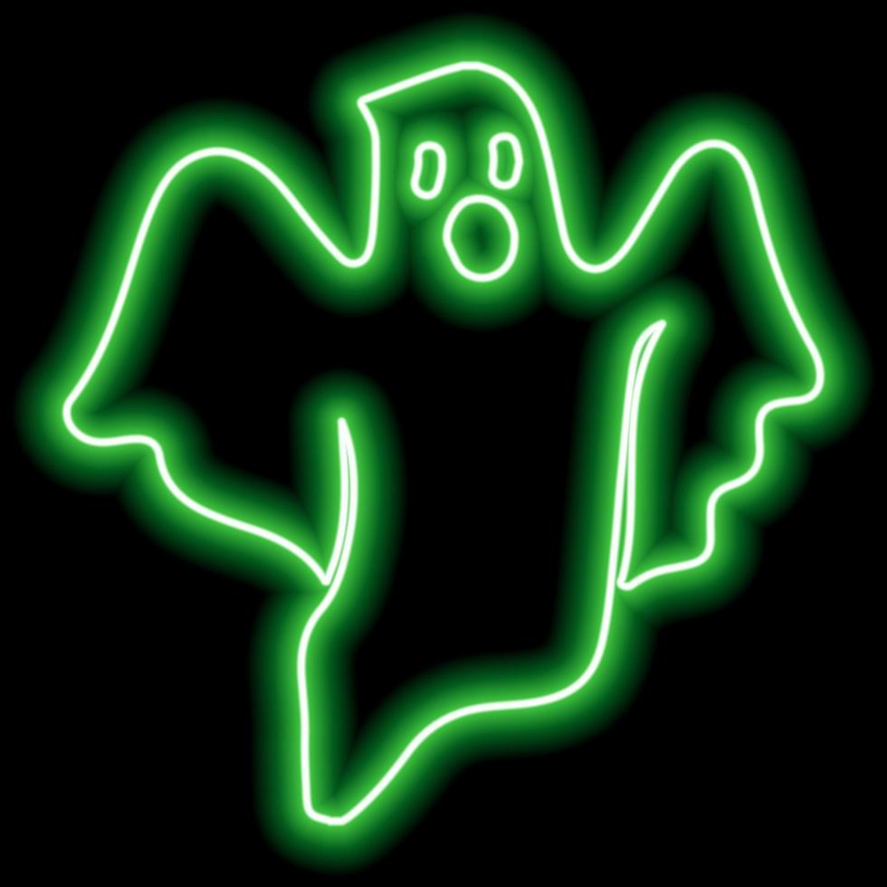

🎵 MP3
🖼️ Imagen/Gif
🎥 Fondo
🌀 Temblor Pantalla
👻 Temblor Círculo
💫 Desenfoque Fondo
▶️
0:00
0:00
🎹 Atajos de Teclado:
Q
: Mostrar/Ocultar interfaz
B
: Desenfoque fondo
V
: Cambiar visualizador
ESPACIO
: Pausa / Play
← / →
: Retroceder / Avanzar 5s
↑ / ↓
: Subir / Bajar volumen